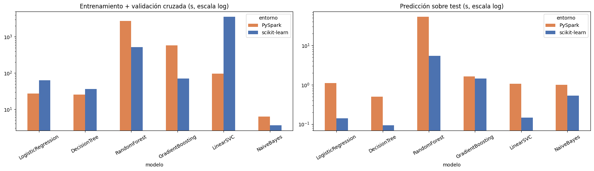
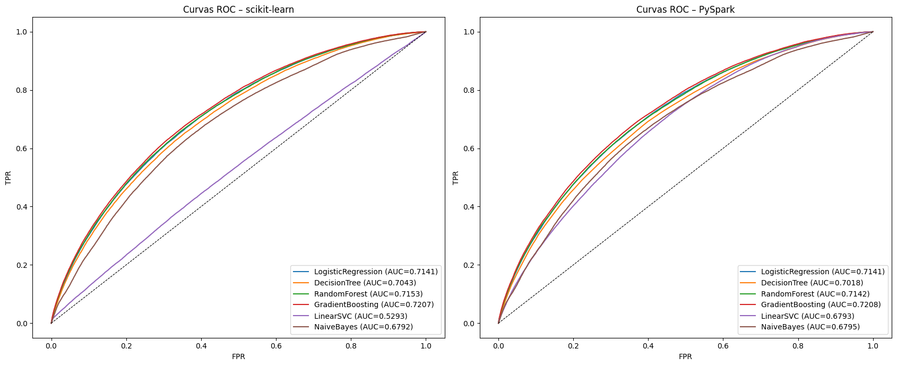
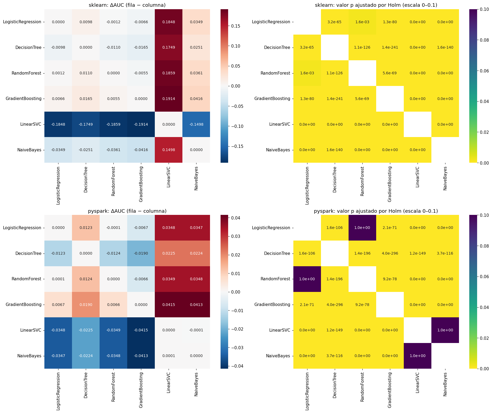
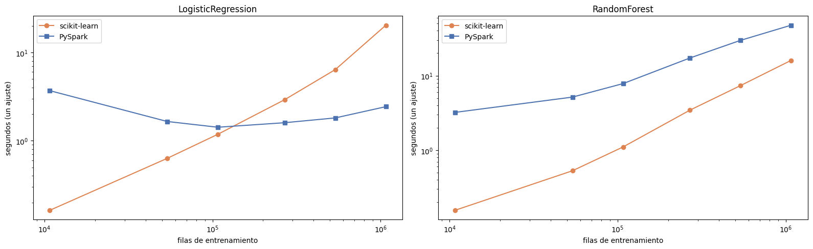

7. Comparación de resultados y reflexión crítica#
Sección 5.6 y entregable (sección 6) del enunciado: tabla comparativa de métricas y tiempos, curvas ROC por entorno, comparación de tiempos, mapas de calor de DeLong, resumen de las tres pruebas estadísticas, un experimento auxiliar de escalabilidad y la reflexión crítica final.
import sys # Permite modificar la ruta de búsqueda de módulos
sys.path.insert(0, "..") # Agrega la raíz del proyecto
import time # Medición de tiempos
import numpy as np # Cálculo numérico
import pandas as pd # Manipulación de datos
import matplotlib.pyplot as plt # Gráficos
from IPython.display import Image, display # Muestra figuras guardadas
from sklearn.metrics import roc_curve # Curva ROC
from src import config as cfg # Configuración central
from src.utilidades import guardar_figura, info_hardware, leer_json # Utilidades
pd.set_option("display.float_format", lambda x: f"{x:.4f}") # Formato numérico
pd.set_option("display.max_columns", 40) # Muestra hasta 40 columnas
pd.set_option("display.width", 250) # Ancho de impresión
met = {"scikit-learn": leer_json(cfg.RUTA_METRICAS_SK)["modelos"], "PySpark": leer_json(cfg.RUTA_METRICAS_SP)["modelos"]} # Métricas de ambos entornos
prep_t = leer_json(cfg.RUTA_TIEMPOS_PREP) # Tiempos de preprocesamiento
info_hardware() # Hardware utilizado
{'sistema': 'Windows 10',
'procesador': 'AMD64 Family 25 Model 117 Stepping 2, AuthenticAMD',
'nucleos_fisicos': 6,
'nucleos_logicos': 12,
'ram_total_gb': 13.8,
'ram_disponible_gb': 6.1,
'python': '3.9.25'}
Tabla comparativa de métricas (test, umbral por defecto) y F1 con el umbral elegido en train#
filas = [] # Una fila por modelo y entorno
for entorno, m in met.items(): # Recorre los entornos
for modelo in cfg.NOMBRES_MODELOS: # Recorre los modelos
r = m[modelo] # Resultados del modelo
filas.append({"modelo": modelo, "entorno": entorno, # Identificación
**{k: r["metricas"][k] for k in ["accuracy", "precision", "recall", "f1", "roc_auc"]}, # Métricas con umbral por defecto
"f1_umbral_train": r["metricas_umbral"]["f1"], "recall_umbral_train": r["metricas_umbral"]["recall"], # Métricas con umbral de train
"mejores_parametros": str(r["mejores_parametros"])}) # Hiperparámetros ganadores
metr = pd.DataFrame(filas).set_index(["modelo", "entorno"]).sort_index(level=0, key=lambda s: s.map(cfg.NOMBRES_MODELOS.index)) # Tabla ordenada
metr # Muestra la tabla
| accuracy | precision | recall | f1 | roc_auc | f1_umbral_train | recall_umbral_train | mejores_parametros | ||
|---|---|---|---|---|---|---|---|---|---|
| modelo | entorno | ||||||||
| LogisticRegression | PySpark | 0.8028 | 0.5515 | 0.0647 | 0.1158 | 0.7141 | 0.4309 | 0.6361 | {'regParam': 1e-05} |
| scikit-learn | 0.8028 | 0.5522 | 0.0641 | 0.1149 | 0.7141 | 0.4311 | 0.6308 | {'C': 0.009291538753149831} | |
| DecisionTree | PySpark | 0.8013 | 0.5185 | 0.0629 | 0.1122 | 0.7018 | 0.4202 | 0.6476 | {'maxDepth': 10} |
| scikit-learn | 0.8016 | 0.5239 | 0.0659 | 0.1171 | 0.7043 | 0.4234 | 0.6101 | {'max_depth': 10} | |
| RandomForest | PySpark | 0.8027 | 0.5807 | 0.0422 | 0.0786 | 0.7142 | 0.4287 | 0.5486 | {'numTrees': 100, 'maxDepth': 15} |
| scikit-learn | 0.8026 | 0.5802 | 0.0408 | 0.0762 | 0.7153 | 0.4292 | 0.5385 | {'max_depth': 15, 'n_estimators': 100} | |
| GradientBoosting | PySpark | 0.8039 | 0.5562 | 0.0874 | 0.1510 | 0.7208 | 0.4373 | 0.6288 | {'maxIter': 100, 'maxDepth': 5} |
| scikit-learn | 0.8039 | 0.5710 | 0.0704 | 0.1254 | 0.7207 | 0.4377 | 0.6351 | {'max_depth': 5, 'max_iter': 100} | |
| LinearSVC | PySpark | 0.8004 | 0.0000 | 0.0000 | 0.0000 | 0.6793 | 0.4027 | 0.6994 | {'regParam': 1e-05} |
| scikit-learn | 0.8003 | 0.4924 | 0.0162 | 0.0314 | 0.5293 | 0.3325 | 0.9949 | {'C': 0.9291538753149833} | |
| NaiveBayes | PySpark | 0.7203 | 0.3425 | 0.4365 | 0.3838 | 0.6795 | 0.4100 | 0.6560 | {} |
| scikit-learn | 0.7206 | 0.3425 | 0.4344 | 0.3830 | 0.6792 | 0.4095 | 0.6551 | {} |
Tiempos de cómputo por modelo y entorno (segundos)#
filas = [] # Una fila por modelo y entorno
for entorno, m in met.items(): # Recorre los entornos
clave = "sklearn" if entorno == "scikit-learn" else "pyspark" # Clave en el JSON de preprocesamiento
for modelo in cfg.NOMBRES_MODELOS: # Recorre los modelos
r = m[modelo] # Resultados del modelo
filas.append({"modelo": modelo, "entorno": entorno, # Identificación
"preprocesamiento (común)": prep_t[clave]["total"], # Tiempo de preprocesamiento del entorno
"entrenamiento + CV": r["tiempo_entrenamiento_s"], # Tiempo de entrenamiento con validación cruzada
"predicción": r["tiempo_prediccion_s"], # Tiempo de predicción
"transferencia al driver": r.get("tiempo_transferencia_s", 0.0)}) # Solo PySpark
tiempos = pd.DataFrame(filas).set_index(["modelo", "entorno"]).sort_index(level=0, key=lambda s: s.map(cfg.NOMBRES_MODELOS.index)) # Tabla ordenada
tiempos["total modelo"] = tiempos[["entrenamiento + CV", "predicción", "transferencia al driver"]].sum(axis=1) # Tiempo total por modelo
tiempos # Muestra la tabla
| preprocesamiento (común) | entrenamiento + CV | predicción | transferencia al driver | total modelo | ||
|---|---|---|---|---|---|---|
| modelo | entorno | |||||
| LogisticRegression | PySpark | 38.1933 | 27.0739 | 1.0978 | 0.9830 | 29.1546 |
| scikit-learn | 29.3051 | 63.3387 | 0.1419 | 0.0000 | 63.4806 | |
| DecisionTree | PySpark | 38.1933 | 25.5156 | 0.5015 | 0.7667 | 26.7838 |
| scikit-learn | 29.3051 | 36.6852 | 0.0939 | 0.0000 | 36.7791 | |
| RandomForest | PySpark | 38.1933 | 2740.5329 | 52.7995 | 10.7559 | 2804.0883 |
| scikit-learn | 29.3051 | 518.8967 | 5.3602 | 0.0000 | 524.2569 | |
| GradientBoosting | PySpark | 38.1933 | 580.8381 | 1.6223 | 0.9192 | 583.3796 |
| scikit-learn | 29.3051 | 70.6159 | 1.4436 | 0.0000 | 72.0594 | |
| LinearSVC | PySpark | 38.1933 | 97.3622 | 1.0567 | 0.9063 | 99.3252 |
| scikit-learn | 29.3051 | 3549.4394 | 0.1457 | 0.0000 | 3549.5850 | |
| NaiveBayes | PySpark | 38.1933 | 6.2603 | 0.9962 | 0.7364 | 7.9929 |
| scikit-learn | 29.3051 | 3.6361 | 0.5324 | 0.0000 | 4.1685 |
ent = tiempos["entrenamiento + CV"].unstack() # Entrenamiento por modelo (filas) y entorno (columnas)
ent["PySpark / scikit-learn"] = ent["PySpark"] / ent["scikit-learn"] # Cociente de tiempos (< 1 → PySpark más rápido)
ent.loc["TOTAL"] = {"scikit-learn": ent["scikit-learn"].sum(), "PySpark": ent["PySpark"].sum(), # Totales por entorno (por nombre de columna)
"PySpark / scikit-learn": ent["PySpark"].sum() / ent["scikit-learn"].sum()} # Cociente de los totales
print("Preprocesamiento (s):", {k: round(v["total"], 1) for k, v in prep_t.items()}) # Tiempos de preprocesamiento
ent # Muestra la tabla
Preprocesamiento (s): {'sklearn': 29.3, 'pyspark': 38.2}
| entorno | PySpark | scikit-learn | PySpark / scikit-learn |
|---|---|---|---|
| modelo | |||
| DecisionTree | 25.5156 | 36.6852 | 0.6955 |
| GradientBoosting | 580.8381 | 70.6159 | 8.2253 |
| LinearSVC | 97.3622 | 3549.4394 | 0.0274 |
| LogisticRegression | 27.0739 | 63.3387 | 0.4274 |
| NaiveBayes | 6.2603 | 3.6361 | 1.7217 |
| RandomForest | 2740.5329 | 518.8967 | 5.2815 |
| TOTAL | 3477.5830 | 4242.6120 | 0.8197 |
fig, axes = plt.subplots(1, 2, figsize=(17, 5)) # Comparación de tiempos
tiempos["entrenamiento + CV"].unstack().reindex(cfg.NOMBRES_MODELOS).plot.bar(ax=axes[0], color=["#DD8452", "#4C72B0"], logy=True) # Entrenamiento por modelo
axes[0].set_title("Entrenamiento + validación cruzada (s, escala log)"); axes[0].tick_params(axis="x", rotation=30) # Título y etiquetas
tiempos["predicción"].unstack().reindex(cfg.NOMBRES_MODELOS).plot.bar(ax=axes[1], color=["#DD8452", "#4C72B0"], logy=True) # Predicción por modelo
axes[1].set_title("Predicción sobre test (s, escala log)"); axes[1].tick_params(axis="x", rotation=30) # Título y etiquetas
fig.tight_layout() # Ajusta márgenes
guardar_figura(fig, "07_tiempos") # Exporta la figura
plt.show() # Muestra la figura

Curvas ROC (una figura por entorno)#
fig, axes = plt.subplots(1, 2, figsize=(17, 7)) # Una figura por entorno
for ax, (entorno, carpeta) in zip(axes, [("scikit-learn", cfg.DIR_SCORES_SK), ("PySpark", cfg.DIR_SCORES_SP)]): # Recorre los entornos
for modelo in cfg.NOMBRES_MODELOS: # Recorre los modelos
s = pd.read_parquet(carpeta / f"{modelo}.parquet") # Puntuaciones de test
fpr, tpr, _ = roc_curve(s[cfg.COL_TARGET], s["score"]) # Curva ROC
ax.plot(fpr, tpr, label=f"{modelo} (AUC={met[entorno][modelo]['metricas']['roc_auc']:.4f})") # Dibuja la curva
ax.plot([0, 1], [0, 1], "k--", lw=0.8) # Diagonal de referencia
ax.set_title(f"Curvas ROC – {entorno}"); ax.set_xlabel("FPR"); ax.set_ylabel("TPR"); ax.legend(loc="lower right") # Rótulos
fig.tight_layout() # Ajusta márgenes
guardar_figura(fig, "07_roc_ambos") # Exporta la figura
plt.show() # Muestra la figura

Prueba de DeLong: AUC con IC 95 %, comparaciones entre entornos y mapas de calor#
auc_ic = pd.read_csv(cfg.DIR_SALIDAS / "auc_ic95.csv", header=[0, 1], index_col=0) # AUC e IC por modelo y entorno
auc_ic # Muestra la tabla
| AUC | IC95_inf | IC95_sup | ||||
|---|---|---|---|---|---|---|
| entorno | pyspark | sklearn | pyspark | sklearn | pyspark | sklearn |
| modelo | ||||||
| LogisticRegression | 0.7141 | 0.7141 | 0.7118 | 0.7117 | 0.7165 | 0.7165 |
| DecisionTree | 0.7018 | 0.7043 | 0.6994 | 0.7019 | 0.7042 | 0.7067 |
| RandomForest | 0.7142 | 0.7153 | 0.7119 | 0.7129 | 0.7166 | 0.7176 |
| GradientBoosting | 0.7208 | 0.7207 | 0.7184 | 0.7184 | 0.7231 | 0.7231 |
| LinearSVC | 0.6793 | 0.5293 | 0.6769 | 0.5266 | 0.6817 | 0.5321 |
| NaiveBayes | 0.6795 | 0.6792 | 0.6770 | 0.6767 | 0.6819 | 0.6816 |
fam1 = pd.read_csv(cfg.DIR_SALIDAS / "delong_entre_entornos.csv", index_col=0) # DeLong sklearn vs PySpark
fam1[["auc_1", "auc_2", "delta_auc", "delta_ic_inf", "delta_ic_sup", "z", "p_valor", "p_holm", "significativa", "relevante"]].rename(columns={"auc_1": "AUC sklearn", "auc_2": "AUC PySpark"}) # Tabla resumida
| AUC sklearn | AUC PySpark | delta_auc | delta_ic_inf | delta_ic_sup | z | p_valor | p_holm | significativa | relevante | |
|---|---|---|---|---|---|---|---|---|---|---|
| comparacion | ||||||||||
| LogisticRegression: sklearn vs PySpark | 0.7141 | 0.7141 | -0.0000 | -0.0000 | 0.0000 | -0.9576 | 0.3383 | 0.6765 | False | False |
| DecisionTree: sklearn vs PySpark | 0.7043 | 0.7018 | 0.0025 | 0.0015 | 0.0034 | 5.0249 | 0.0000 | 0.0000 | True | False |
| RandomForest: sklearn vs PySpark | 0.7153 | 0.7142 | 0.0011 | 0.0007 | 0.0014 | 6.3575 | 0.0000 | 0.0000 | True | False |
| GradientBoosting: sklearn vs PySpark | 0.7207 | 0.7208 | -0.0000 | -0.0004 | 0.0003 | -0.2267 | 0.8206 | 0.8206 | False | False |
| LinearSVC: sklearn vs PySpark | 0.5293 | 0.6793 | -0.1500 | -0.1534 | -0.1465 | -85.5268 | 0.0000 | 0.0000 | True | True |
| NaiveBayes: sklearn vs PySpark | 0.6792 | 0.6795 | -0.0003 | -0.0004 | -0.0002 | -10.7921 | 0.0000 | 0.0000 | True | False |
display(Image(filename=str(cfg.DIR_FIGURAS / "05_heatmaps_delong.png"))) # Mapas de calor generados en el notebook 05

Resumen de las tres pruebas (DeLong, McNemar, bootstrap pareado)#
comp = pd.read_csv(cfg.DIR_SALIDAS / "comparaciones_complementarias.csv", index_col=0) # Resultados del notebook 05
def ic(a, b): # Formatea un intervalo
return f"[{a:+.4f}, {b:+.4f}]" # Texto del intervalo
tabla = pd.DataFrame({ # Tabla de síntesis
"ΔAUC": comp["delong_delta_auc"], # Diferencia de AUC
"DeLong IC95": [ic(a, b) for a, b in zip(comp["delong_ic_inf"], comp["delong_ic_sup"])], # IC de DeLong
"DeLong p_Holm": comp["delong_p_holm"], # p ajustado DeLong
"McNemar b / c": [f"{b:,} / {c:,}" for b, c in zip(comp["mcnemar_b"], comp["mcnemar_c"])], # Discordantes
"McNemar p_Holm": comp["mcnemar_p_holm"], # p ajustado McNemar
"Boot ΔAUC IC95": [ic(a, b) for a, b in zip(comp["boot_delta_auc_ic_inf"], comp["boot_delta_auc_ic_sup"])], # IC bootstrap AUC
"Boot ΔAUC-PR IC95": [ic(a, b) for a, b in zip(comp["boot_delta_auc_pr_ic_inf"], comp["boot_delta_auc_pr_ic_sup"])], # IC bootstrap AUC-PR
"Boot ΔF1 IC95": [ic(a, b) for a, b in zip(comp["boot_delta_f1_ic_inf"], comp["boot_delta_f1_ic_sup"])], # IC bootstrap F1
})
tabla # Muestra la tabla
| ΔAUC | DeLong IC95 | DeLong p_Holm | McNemar b / c | McNemar p_Holm | Boot ΔAUC IC95 | Boot ΔAUC-PR IC95 | Boot ΔF1 IC95 | |
|---|---|---|---|---|---|---|---|---|
| comparacion | ||||||||
| LogisticRegression: sklearn vs PySpark | -0.0000 | [-0.0000, +0.0000] | 0.6765 | 1,135 / 319 | 0.0000 | [-0.0000, +0.0000] | [-0.0002, -0.0001] | [-0.0002, +0.0006] |
| DecisionTree: sklearn vs PySpark | 0.0025 | [+0.0015, +0.0034] | 0.0000 | 18,549 / 11,787 | 0.0000 | [+0.0015, +0.0034] | [+0.0025, +0.0063] | [+0.0014, +0.0050] |
| RandomForest: sklearn vs PySpark | 0.0011 | [+0.0007, +0.0014] | 0.0000 | 5,413 / 3,812 | 0.0000 | [+0.0007, +0.0014] | [+0.0001, +0.0015] | [-0.0007, +0.0016] |
| GradientBoosting: sklearn vs PySpark | -0.0000 | [-0.0004, +0.0003] | 0.8206 | 5,555 / 6,250 | 0.0000 | [-0.0004, +0.0003] | [-0.0007, +0.0012] | [-0.0006, +0.0016] |
| LinearSVC: sklearn vs PySpark | -0.1500 | [-0.1534, -0.1465] | 0.0000 | 16,471 / 119,601 | 0.0000 | [-0.1534, -0.1466] | [-0.1063, -0.0999] | [-0.0724, -0.0682] |
| NaiveBayes: sklearn vs PySpark | -0.0003 | [-0.0004, -0.0002] | 0.0000 | 742 / 797 | 0.1687 | [-0.0004, -0.0002] | [-0.0009, -0.0006] | [-0.0008, -0.0001] |
| sklearn: GradientBoosting vs RandomForest | 0.0055 | [+0.0048, +0.0061] | 0.0000 | 7,457 / 18,142 | 0.0000 | [+0.0049, +0.0061] | [+0.0068, +0.0094] | [+0.0068, +0.0103] |
| pyspark: GradientBoosting vs RandomForest | 0.0066 | [+0.0059, +0.0072] | 0.0000 | 8,838 / 17,227 | 0.0000 | [+0.0059, +0.0073] | [+0.0073, +0.0101] | [+0.0069, +0.0104] |
Experimento auxiliar: ¿a partir de qué volumen PySpark supera a scikit-learn?#
Para responder a esta pregunta de la reflexión se mide el tiempo de un solo ajuste (sin validación cruzada) de dos modelos representativos con hiperparámetros fijos, sobre fracciones crecientes del conjunto de entrenamiento: 1 %, 5 %, 10 %, 25 %, 50 % y 100 %. Este experimento es solo de tiempos: ningún modelo reportado en el proyecto se entrenó con datos reducidos. Las fracciones se toman con la misma lista de índices en ambos entornos.
from sklearn.linear_model import LogisticRegression as SkLR # Regresión logística de sklearn
from sklearn.ensemble import RandomForestClassifier as SkRF # Bosque aleatorio de sklearn
from pyspark.sql import functions as F # Funciones de Spark
from pyspark.ml.classification import LogisticRegression as SpLR, RandomForestClassifier as SpRF, GBTClassifier # Modelos de Spark
from src import preparacion_spark as prep_sp # Preparación con Spark
X_train = np.load(cfg.DIR_SKLEARN_PREP / "X_train.npy") # Matriz de entrenamiento de sklearn
y_train = np.load(cfg.DIR_SKLEARN_PREP / "y_train.npy") # Etiquetas de entrenamiento
id_train = np.load(cfg.DIR_SKLEARN_PREP / "id_train.npy") # Identificadores de entrenamiento
orden = np.random.default_rng(cfg.SEMILLA).permutation(len(id_train)) # Orden aleatorio fijo de las filas de train
rango = pd.DataFrame({cfg.COL_ID: id_train[orden], "rango": np.arange(len(orden)) / len(orden)}) # Posición relativa de cada id (0–1)
rango.to_parquet(cfg.DIR_DATOS / "rango_escalabilidad.parquet", index=False) # Se guarda para que Spark lo lea sin pasar por el driver
fracciones = [0.01, 0.05, 0.10, 0.25, 0.50, 1.00] # Fracciones de train a evaluar
spark = prep_sp.crear_sesion() # Sesión de Spark con la configuración del enunciado
df = prep_sp.transformar_numericas(prep_sp.construir_variables(prep_sp.leer_csv(spark))) # Lee y construye variables
df = df.join(F.broadcast(spark.read.parquet(str(cfg.RUTA_PARTICION))), on=cfg.COL_ID).filter(F.col("split") == "train") # Solo train
frec = prep_sp.categorias_frecuentes(df, cfg.CATEGORICAS_MODELO) # Categorías frecuentes de train
df = prep_sp.agrupar_categorias(df, frec) # Agrupa categorías raras
feat = prep_sp.pipeline_preprocesamiento().fit(df).transform(df).select(cfg.COL_ID, "features", cfg.COL_TARGET) # Vector de características
feat = feat.join(F.broadcast(spark.read.parquet(str(cfg.DIR_DATOS / "rango_escalabilidad.parquet"))), on=cfg.COL_ID).repartition(cfg.PARTICIONES_SPARK).persist() # Agrega la posición relativa (tabla pequeña de id → rango)
feat.count() # Materializa la caché
filas = [] # Resultados del experimento
for frac in fracciones: # Recorre las fracciones
idx = orden[: int(frac * len(orden))] # Índices de sklearn de la fracción
sub = feat.filter(F.col("rango") < frac).persist() # Mismas filas en Spark
n_sub = sub.count() # Materializa la fracción
for nombre, sk_mod, sp_mod in [ # Dos modelos representativos
("LogisticRegression", SkLR(C=cfg.c_desde_regparam(1e-5, len(idx)), max_iter=1000), SpLR(regParam=1e-5, elasticNetParam=0.0, maxIter=100, featuresCol="features", labelCol=cfg.COL_TARGET)), # Lineal
("RandomForest", SkRF(n_estimators=50, max_depth=10, n_jobs=-1, random_state=cfg.SEMILLA), SpRF(numTrees=50, maxDepth=10, seed=cfg.SEMILLA, featuresCol="features", labelCol=cfg.COL_TARGET)), # Ensamble
]:
t0 = time.time(); sk_mod.fit(X_train[idx], y_train[idx]); t_sk = time.time() - t0 # Ajuste en sklearn
t0 = time.time(); sp_mod.fit(sub); t_sp = time.time() - t0 # Ajuste en Spark
filas.append({"fraccion": frac, "n": n_sub, "modelo": nombre, "scikit-learn": t_sk, "PySpark": t_sp}) # Guarda los tiempos
print(f"{frac:>5.0%} n={n_sub:>9,} {nombre:<18} sklearn={t_sk:7.1f}s PySpark={t_sp:7.1f}s", flush=True) # Progreso
sub.unpersist() # Libera la fracción
feat.unpersist(); spark.stop() # Libera recursos
escala = pd.DataFrame(filas) # Tabla de resultados
escala.to_csv(cfg.DIR_SALIDAS / "escalabilidad.csv", index=False) # Guarda los resultados
1% n= 10,763 LogisticRegression sklearn= 0.2s PySpark= 3.7s
1% n= 10,763 RandomForest sklearn= 0.2s PySpark= 3.2s
5% n= 53,813 LogisticRegression sklearn= 0.6s PySpark= 1.7s
5% n= 53,813 RandomForest sklearn= 0.5s PySpark= 5.1s
10% n= 107,625 LogisticRegression sklearn= 1.2s PySpark= 1.4s
10% n= 107,625 RandomForest sklearn= 1.1s PySpark= 7.8s
25% n= 269,062 LogisticRegression sklearn= 2.9s PySpark= 1.6s
25% n= 269,062 RandomForest sklearn= 3.4s PySpark= 17.2s
50% n= 538,124 LogisticRegression sklearn= 6.4s PySpark= 1.8s
50% n= 538,124 RandomForest sklearn= 7.3s PySpark= 29.7s
100% n=1,076,248 LogisticRegression sklearn= 20.3s PySpark= 2.4s
100% n=1,076,248 RandomForest sklearn= 16.0s PySpark= 47.5s
fig, axes = plt.subplots(1, 2, figsize=(16, 5)) # Tiempo vs tamaño para cada modelo
for ax, (nombre, g) in zip(axes, escala.groupby("modelo")): # Un gráfico por modelo
ax.plot(g["n"], g["scikit-learn"], "o-", color="#DD8452", label="scikit-learn") # Curva de sklearn
ax.plot(g["n"], g["PySpark"], "s-", color="#4C72B0", label="PySpark") # Curva de PySpark
ax.set_xscale("log"); ax.set_yscale("log") # Escalas logarítmicas
ax.set_xlabel("filas de entrenamiento"); ax.set_ylabel("segundos (un ajuste)"); ax.set_title(nombre); ax.legend() # Rótulos
fig.tight_layout() # Ajusta márgenes
guardar_figura(fig, "07_escalabilidad") # Exporta la figura
plt.show() # Muestra la figura
escala.assign(**{"PySpark / sklearn": escala["PySpark"] / escala["scikit-learn"]}) # Tabla con el cociente de tiempos

| fraccion | n | modelo | scikit-learn | PySpark | PySpark / sklearn | |
|---|---|---|---|---|---|---|
| 0 | 0.0100 | 10763 | LogisticRegression | 0.1631 | 3.6909 | 22.6270 |
| 1 | 0.0100 | 10763 | RandomForest | 0.1559 | 3.2105 | 20.5883 |
| 2 | 0.0500 | 53813 | LogisticRegression | 0.6323 | 1.6523 | 2.6132 |
| 3 | 0.0500 | 53813 | RandomForest | 0.5289 | 5.1499 | 9.7375 |
| 4 | 0.1000 | 107625 | LogisticRegression | 1.1835 | 1.4221 | 1.2017 |
| 5 | 0.1000 | 107625 | RandomForest | 1.1035 | 7.8154 | 7.0825 |
| 6 | 0.2500 | 269062 | LogisticRegression | 2.9192 | 1.6008 | 0.5484 |
| 7 | 0.2500 | 269062 | RandomForest | 3.4403 | 17.2419 | 5.0118 |
| 8 | 0.5000 | 538124 | LogisticRegression | 6.3930 | 1.8137 | 0.2837 |
| 9 | 0.5000 | 538124 | RandomForest | 7.3457 | 29.7370 | 4.0482 |
| 10 | 1.0000 | 1076248 | LogisticRegression | 20.3481 | 2.4319 | 0.1195 |
| 11 | 1.0000 | 1076248 | RandomForest | 16.0165 | 47.4804 | 2.9645 |
Experimento auxiliar: efecto de las condiciones obligatorias de Spark#
Se mide, sobre todo el conjunto de entrenamiento, el tiempo de ajustar un
GBTClassifier (10 iteraciones, profundidad 5) y un RandomForestClassifier (20 árboles,
profundidad 10) bajo tres condiciones:
6 particiones + caché (configuración usada en el notebook 04,
local[6]);400 particiones + caché (valores literales del enunciado para
shuffle.partitions,default.parallelismy el reparto de los datos);6 particiones sin caché: cada pasada del algoritmo vuelve a leer y descomprimir el CSV y a recalcular el preprocesamiento (solo con el bosque, por su costo).
def features_train(spark, particiones): # Construye el DataFrame de train con el vector de características
d = prep_sp.transformar_numericas(prep_sp.construir_variables(prep_sp.leer_csv(spark))) # Lectura y variables
d = d.join(F.broadcast(spark.read.parquet(str(cfg.RUTA_PARTICION))), on=cfg.COL_ID).filter(F.col("split") == "train") # Solo train
d = prep_sp.agrupar_categorias(d, prep_sp.categorias_frecuentes(d, cfg.CATEGORICAS_MODELO)).repartition(particiones) # Categorías y reparto
return prep_sp.pipeline_preprocesamiento().fit(d).transform(d).select("features", cfg.COL_TARGET) # Vector de características (perezoso)
modelos_exp = { # Modelos del experimento
"GBT (10 it., prof. 5)": lambda: GBTClassifier(maxIter=10, maxDepth=5, seed=cfg.SEMILLA, featuresCol="features", labelCol=cfg.COL_TARGET), # Boosting
"RF (20 árboles, prof. 10)": lambda: SpRF(numTrees=20, maxDepth=10, seed=cfg.SEMILLA, featuresCol="features", labelCol=cfg.COL_TARGET), # Bosque
}
filas = [] # Resultados del experimento
for particiones in [cfg.PARTICIONES_SPARK, 400]: # Recorre las dos configuraciones de particiones
spark = prep_sp.crear_sesion(particiones=particiones) # Sesión nueva con esa configuración
feat = features_train(spark, particiones).persist() # Datos de train cacheados
feat.count() # Materializa la caché
for nombre, crear in modelos_exp.items(): # Recorre los modelos
t0 = time.time(); crear().fit(feat); t = time.time() - t0 # Ajuste cronometrado
filas.append({"condición": f"{particiones} particiones + caché", "modelo": nombre, "segundos": t}) # Guarda el tiempo
print(filas[-1], flush=True) # Progreso
feat.unpersist() # Libera la caché
if particiones == cfg.PARTICIONES_SPARK: # Condición sin caché (solo con 6 particiones)
sin_cache = features_train(spark, particiones) # Mismo DataFrame, sin persist()
t0 = time.time(); modelos_exp["RF (20 árboles, prof. 10)"]().fit(sin_cache); t = time.time() - t0 # Ajuste sin caché
filas.append({"condición": f"{particiones} particiones sin caché", "modelo": "RF (20 árboles, prof. 10)", "segundos": t}) # Guarda el tiempo
print(filas[-1], flush=True) # Progreso
spark.stop() # Detiene la sesión antes de cambiar la configuración
condiciones = pd.DataFrame(filas).pivot(index="modelo", columns="condición", values="segundos") # Tabla modelo × condición
condiciones.to_csv(cfg.DIR_SALIDAS / "efecto_condiciones_spark.csv") # Guarda la tabla
condiciones # Muestra la tabla
{'condición': '6 particiones + caché', 'modelo': 'GBT (10 it., prof. 5)', 'segundos': 8.716172218322754}
{'condición': '6 particiones + caché', 'modelo': 'RF (20 árboles, prof. 10)', 'segundos': 15.161192655563354}
{'condición': '6 particiones sin caché', 'modelo': 'RF (20 árboles, prof. 10)', 'segundos': 92.48577618598938}
{'condición': '400 particiones + caché', 'modelo': 'GBT (10 it., prof. 5)', 'segundos': 75.64392304420471}
{'condición': '400 particiones + caché', 'modelo': 'RF (20 árboles, prof. 10)', 'segundos': 141.4095959663391}
| condición | 400 particiones + caché | 6 particiones + caché | 6 particiones sin caché |
|---|---|---|---|
| modelo | |||
| GBT (10 it., prof. 5) | 75.6439 | 8.7162 | NaN |
| RF (20 árboles, prof. 10) | 141.4096 | 15.1612 | 92.4858 |
Reflexión crítica#
¿Qué entorno fue más rápido y por qué?#
Sumando el entrenamiento con validación cruzada de los seis modelos, PySpark tardó ≈ 3.478 s y scikit-learn ≈ 4.243 s. Pero el total engaña: sin LinearSVC (cuyo solucionador de scikit-learn es patológicamente lento aquí), scikit-learn tarda ≈ 693 s y PySpark ≈ 3.380 s. El resultado depende del algoritmo:
PySpark gana en los modelos lineales y el árbol simple (regresión logística 27 s vs 63 s; árbol 26 s vs 37 s; LinearSVC 97 s vs 3.549 s). Son algoritmos de pocas pasadas sobre datos cacheados; cada pasada se reparte bien entre particiones y Spark usa optimizadores (L-BFGS/OWL-QN) que convergen en pocas iteraciones. El LinearSVC de scikit-learn usa un descenso por coordenadas dual de un solo hilo que, con C ≈ 0,93, necesita miles de iteraciones.
scikit-learn gana en los ensambles (bosque 519 s vs 2.741 s; boosting 71 s vs 581 s). Su código compilado entrena árboles completos en memoria y reparte los árboles del bosque entre 12 hilos. Spark construye los árboles nivel por nivel: cada nivel es un trabajo que serializa los árboles hacia las tareas y combina estadísticas entre particiones, y el boosting encadena 100 árboles secuenciales, cada uno con varios trabajos. Además, PySpark usó 6 hilos (el límite de memoria lo impuso) frente a 12.
Tamaño del dataset: 1,3 M filas × 25 variables caben holgadamente en la RAM de un portátil (la matriz de scikit-learn ocupa ≈ 330 MB), así que la principal ventaja de Spark —procesar datos que no caben en una máquina— no se aprovecha, y su sobrecarga fija sí se paga.
Caché: imprescindible. Sin ella, un bosque de 20 árboles tardó 92,5 s frente a 15,2 s (× 6,1), porque cada pasada volvía a descomprimir el CSV y a recalcular el preprocesamiento.
CrossValidator: multiplica el costo por 3 pliegues × combinaciones, igual que
GridSearchCV; peroGridSearchCVreparte los ajustes en 12 procesos, mientras que en Spark el paralelismo entre combinaciones tuvo que limitarse (1 en los ensambles) por memoria.Configuración de Spark: con las 400 particiones del enunciado, 10 iteraciones de GBT tardaron 75,6 s y 20 árboles de bosque 141,4 s, frente a 8,7 s y 15,2 s con 6 particiones (× 8,7 y × 9,3): en una sola máquina la sobrecarga de tareas diminutas domina.
¿Cuál fue más preciso?#
Empate técnico. El mejor modelo de ambos entornos es gradient boosting con AUC 0,7207 (scikit-learn) y 0,7208 (PySpark), sin diferencia significativa (p Holm = 0,82). scikit-learn es ligeramente mejor en árbol y bosque (+0,0025 y +0,0011, significativas pero irrelevantes) y PySpark es mucho mejor en LinearSVC (+0,150). En F1 con umbral de train, los mejores modelos empatan (0,4377 vs 0,4373).
¿Qué diferencias de AUC son significativas tras Holm y cuáles son relevantes?#
Entre entornos: significativas en árbol, bosque, Naive Bayes y LinearSVC; relevante solo LinearSVC (|ΔAUC| = 0,150). Regresión logística y boosting no difieren.
Entre modelos: 15/15 pares significativos en scikit-learn y 13/15 en PySpark. Son relevantes (≥ 0,005) las ventajas del boosting sobre todos los demás (≥ 0,0055), las de logística y bosque sobre el árbol (≈ 0,010–0,012) y las de todos ellos sobre Naive Bayes (≈ 0,022–0,042). No es relevante la diferencia entre logística y bosque (≤ 0,0012): un modelo lineal regularizado rinde casi como un bosque de 100 árboles con estas variables.
¿Qué diferencias de implementación explican las discrepancias?#
Discretización en los árboles:
maxBins = 32en Spark frente a cortes exactos (árbol/bosque) o 255 intervalos (HistGradientBoosting) en scikit-learn → pequeñas pérdidas de AUC en árbol y bosque.Poda de hojas en Spark: fusiona hojas hermanas con la misma clase predicha; con clases desbalanceadas destruye la ordenación de los árboles poco profundos (profundidad 5: 0,654 vs 0,692 en CV). Además, en los árboles
rawPredictionguarda conteos, no proporciones, y hubo que evaluar sobreprobabilitypara obtener AUC correctos.LinearSVC: mismos objetivos (hinge + L2), pero solucionadores distintos (dual por coordenadas vs OWL-QN) y, sobre todo,
liblinearpenaliza el intercepto; con 20 % de positivos eso degrada el modelo (0,53 vs 0,68).Regularización: C = 1/(regParam·n) es solo aproximada (suma vs promedio de pérdidas), pero con n ≈ 1 M la penalización es tan pequeña que los tres valores dan el mismo AUC.
Boosting:
HistGradientBoostingusa pasos de Newton (gradiente + hessiano) yGBTClassifierajusta árboles de regresión a los pseudo-residuos; aun así el AUC es idéntico.Naive Bayes: el suavizado de varianzas difiere levemente (ΔAUC = 0,0003).
Codificación:
StringIndexer(handleInvalid="keep")añade una columna por variable para categorías no vistas (84 frente a 77 columnas), sin efecto en test.
Limitaciones de DeLong y complemento de McNemar y bootstrap. ¿Coinciden?#
DeLong solo mide la incertidumbre del muestreo del test (no la del entrenamiento), supone independencia y resume todos los umbrales. El bootstrap coincidió con DeLong en las 8 comparaciones de AUC (intervalos casi idénticos) y además permitió evaluar AUC-PR y F1, donde algunas conclusiones cambian (en el bosque, el AUC difiere pero F1 y AUC-PR no). McNemar discrepó con frecuencia porque compara decisiones con umbrales distintos: detectó diferencias donde el AUC es igual (logística, boosting), no las detectó donde el AUC difiere levemente (Naive Bayes) y, entre boosting y bosque, favoreció al bosque por cometer menos errores totales aunque detecta menos defaults. Las tres pruebas coinciden en lo importante (boosting es el mejor; LinearSVC de scikit-learn es claramente inferior) y difieren en los matices, que dependen de qué propiedad del desempeño se mide.
¿A partir de qué volumen PySpark supera a scikit-learn?#
Depende del algoritmo (experimento auxiliar de escalabilidad):
Regresión logística: con 1 % de train (≈ 11 mil filas) PySpark es 23 veces más lento (3,7 s vs 0,16 s) por la sobrecarga fija de trabajos; casi se iguala hacia el 10 % (≈ 110 mil filas: 1,4 s vs 1,2 s) y a partir de ≈ 250 mil filas PySpark es más rápido (1,6 s vs 2,9 s). Con todo train es 8 veces más rápido (2,4 s vs 20,3 s), porque su tiempo casi no crece con n.
Bosque aleatorio: PySpark nunca supera a scikit-learn en este equipo, aunque la brecha se reduce (de × 21 con 11 mil filas a × 3,0 con 1,07 M). Extrapolando la tendencia, haría falta del orden de decenas de millones de filas, o un clúster con más memoria y núcleos, para que la versión distribuida compense.
¿Qué aporta LIME y cuáles son sus limitaciones en entornos distribuidos?#
LIME explicó por qué ambos boosting fallaron en dos préstamos concretos (plazo corto y tasa baja en el falso negativo; tasa alta e ingreso bajo en el falso positivo) y mostró que los dos modelos se apoyan en las mismas variables con los mismos signos. En Spark, LIME exige llevar datos de entrenamiento y perturbaciones al driver, mantener el modelo vivo en la sesión y pagar varios trabajos de Spark por cada lote de perturbaciones (≈ 0,6 s por llamada, y ≈ 250 s antes de optimizar la transferencia). Es viable para unas pocas instancias, no para explicaciones masivas.
¿Qué efecto tuvo cada condición obligatoria en el rendimiento?#
Condición |
Efecto observado |
|---|---|
Dataset completo, sin muestreo |
Aumentó los tiempos de scikit-learn (bosque 519 s; LinearSVC 59 min) y amortizó la sobrecarga fija de Spark; en regresión logística es lo que hace ganar a Spark |
Partición común guardada en Parquet (sin |
Garantiza pruebas pareadas sobre las mismas 269.062 filas (verificado por |
Transformadores ajustados solo con train |
Sin costo apreciable; evita fuga de información (la media de test tras escalar no es exactamente 0) |
Prohibición de |
Todo el preprocesamiento se hizo en Spark; la transferencia final de |
Caché tras el |
Imprescindible: sin caché el bosque de prueba fue 6,1 veces más lento |
|
Mismo número de ajustes que |
400 particiones de shuffle y paralelismo |
≈ 9 veces más lento en una sola máquina (GBT × 8,7; bosque × 9,3); se sustituyó por 6 (justificado) |
Memoria 8g |
Insuficiente para el bosque de 100 árboles de profundidad 15 con 12 tareas simultáneas (tres fallos por falta de memoria); se usaron 9g y |
Conclusión. Con 1,3 millones de filas en un solo equipo, ambos entornos alcanzan la misma capacidad predictiva (AUC ≈ 0,72 con gradient boosting), pero scikit-learn es más rápido y sencillo para los ensambles, mientras que PySpark ya aventaja a scikit-learn en los modelos lineales a partir de unas 250 mil filas. La hipótesis del enunciado («PySpark superará en velocidad a scikit-learn») se cumple solo en parte: para la regresión logística, el árbol y LinearSVC, no para los ensambles.